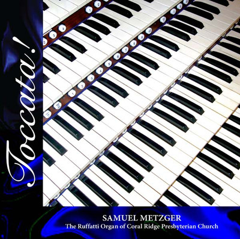

Toccata!
- Toccata and Fugue in D Minor by Johann Sebastian Bach
- Festive Trumpet Tune by David German
- Pæan, A Song of Triumph (Fanfare) by S. W. Oliphant Chuckerbutty
- Carillon de Longpont by Louis Vierne
- Toccata in E Minor by Johann Pachelbel
- Final from Symphony No. 1 by Louis Vierne
- Pastorale by Louis Lefébure-Wely
- Now Thank We All Our God by Johann Sebastian Bach (arr. Virgil Fox)
- Fantasy Prelude on “Amazing Grace” arr. Charles Callahan
- Agincourt Hymn by John Dunstable
- Toccata in E Minor by Joseph Callaerts
- Londonderry Air arr. Noel Rawsthorne
- Carillon-Sortie by Henri Mulet
- The Liberty Bell March by John Philip Sousa (arr. Samuel Metzger)